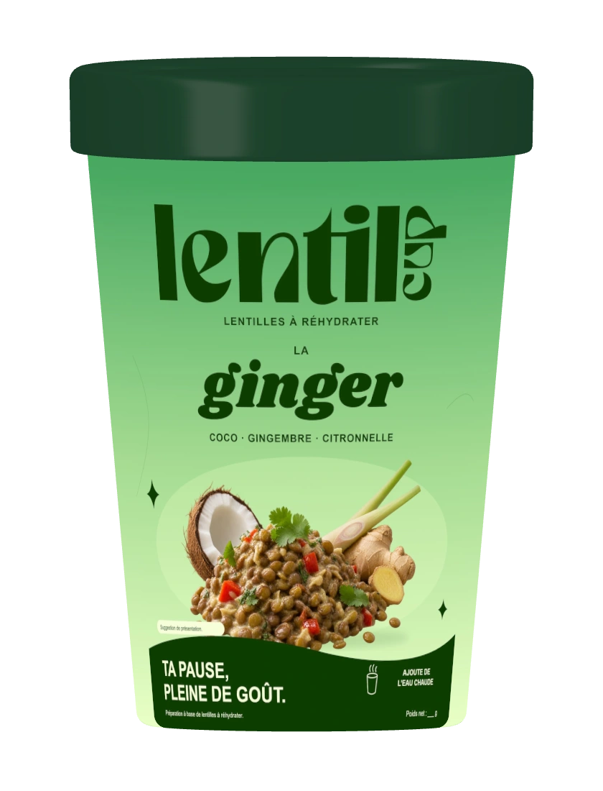
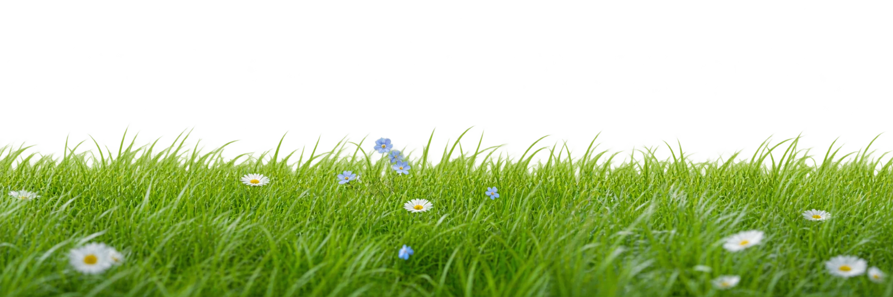
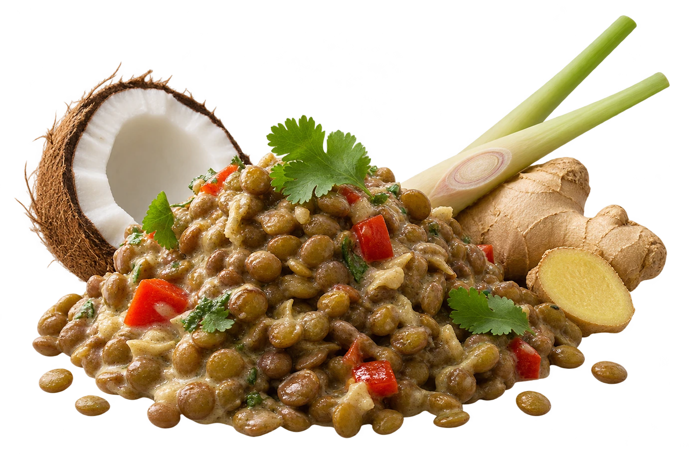
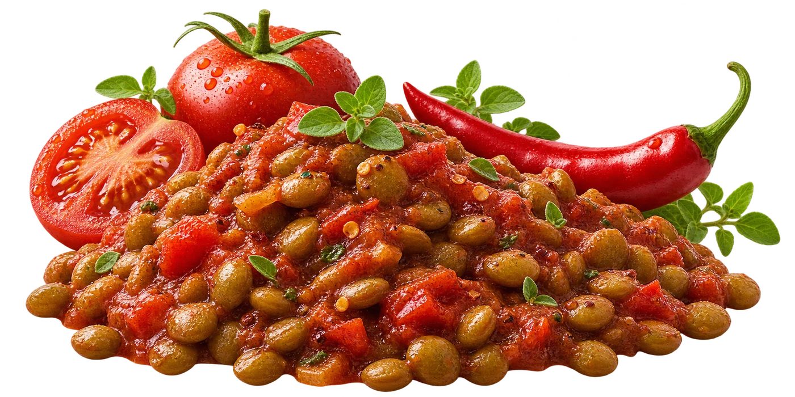
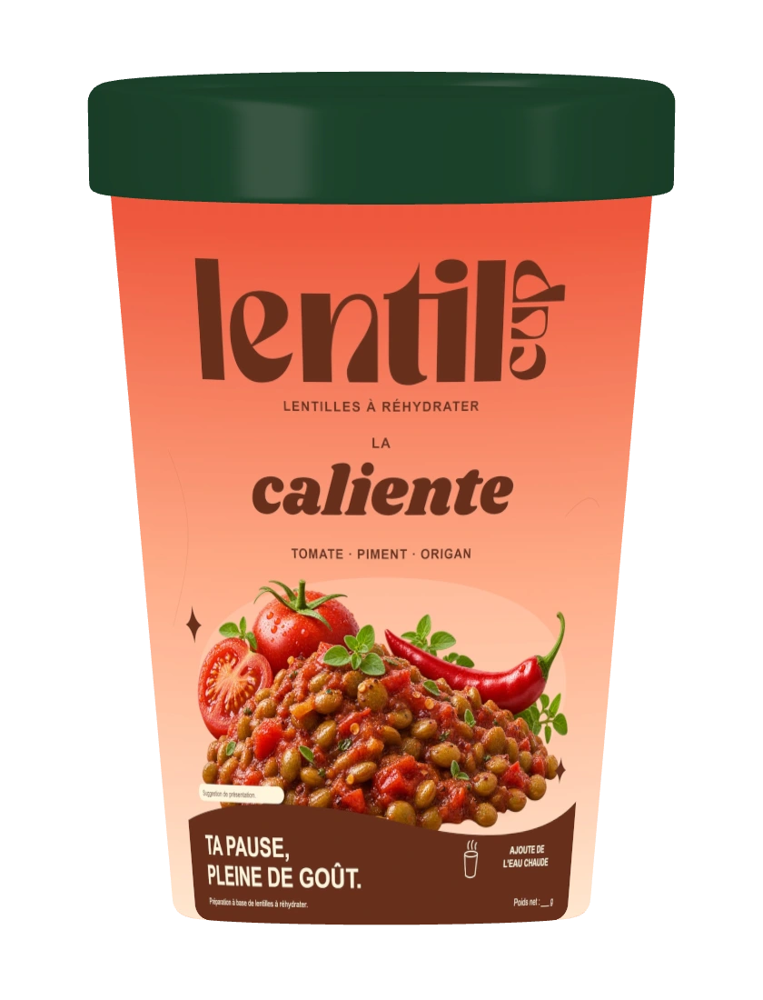

Notre histoire
Une petite cup.
Une grande idée.
Des lentilles, du caractère et une autre façon de prendre sa pause.
Entrer dans l’histoire

Les lentilles méritent
leur moment.
Entre deux rendez-vous. Après une longue journée. Quand on a faim et mille choses à faire.
LENTICUP part d’une envie simple : donner aux lentilles une place dans ces moments-là. Des recettes qui ont du goût, un format à emporter et un peu d’eau chaude pour passer à table.

Des racines.
De nouvelles envies.
Derrière LENTICUP, il y a Sabarot, une maison familiale née en Haute-Loire en 1819.
Son histoire s’est construite autour des graines et des légumes secs. LENTICUP en ouvre un nouveau chapitre : des lentilles à savourer autrement, au rythme de nos journées.
Le début de l’histoire Sabarot.
La suite tient dans une cup.
Petite lentille.
Grand voyage.
Avant votre pause, il y a toute une histoire.
Suivez le grain.
Tout commence
par une lentille.Triées et nettoyées, les lentilles se préparent pour la suite. De petits grains, et déjà beaucoup de potentiel.
Un petit tour
en cuisson.Les lentilles sont précuites. Elles absorbent de l’eau, s’arrondissent et deviennent plus tendres.
Moins d’eau.
La suite au chaud.Après la précuisson vient le séchage. Les lentilles perdent leur eau pour pouvoir être réhydratées au moment de votre pause.
Et là,
ça prend du goût.Place à la recette. Pour La Ginger, les lentilles rencontrent la coco, le gingembre et la citronnelle. Chacune sa personnalité.
Tout ce voyage.
Dans votre cup.Les ingrédients sont réunis dans le pot. À vous d’ajouter l’eau chaude en suivant les indications de préparation. La prochaine étape, c’est votre pause.
Trouver ma cup
Parcours de fabrication illustratif pour cette maquette. Les étapes exactes seront précisées avec Sabarot.
Refaire le voyageUn peu d’eau.
Beaucoup de goût.
Ouvrez votre cup, ajoutez de l’eau chaude et suivez les indications de préparation sur le pot. Mélangez, patientez, savourez.
À vous de choisir
À chacun sa cup.
La prochaine pause,
c’est la vôtre.

Le visuel ne peut pas s’afficher. La recette reste disponible ci-contre.
La Caliente
Arrabbiata
La tomate, le piment et l’origan donnent le ton à cette recette de lentilles façon arrabbiata.